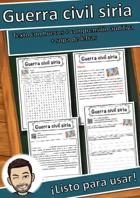
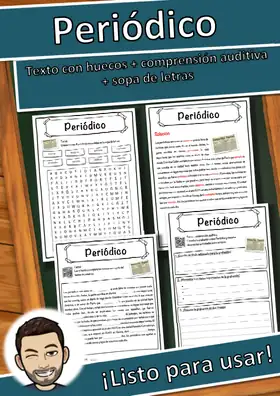
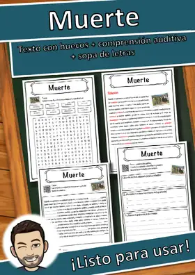
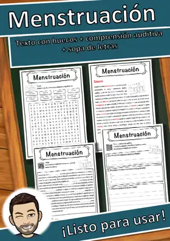
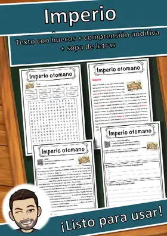
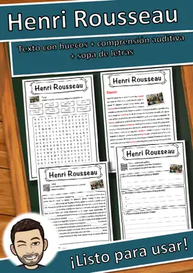
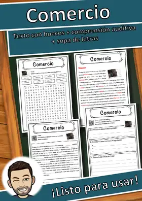
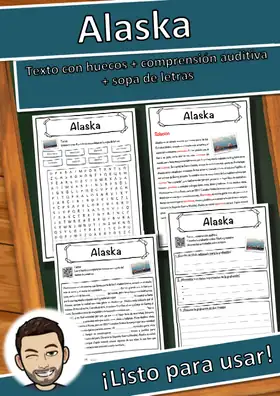
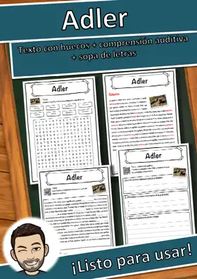

Guerra civil siria – Ficha: texto con huecos, comprensión auditiva y sopa de letras
Ficha de lectura en español sobre «Guerra civil siria»: texto informativo con huecos y banco de palabras, comprensión auditiva con código QR (audio MP3 gratuito, sin registro) y sopa de letras (5 páginas, con solucionario).
Del texto: «En 2011, muchas personas en Siria salieron a la calle para pedir cambios porque estaban cansadas del presidente Bashar al-Ásad y de su gobierno.»
Contenido:
- Página 1: texto informativo sobre Guerra civil siria como texto con huecos y banco de palabras (8 huecos)
- Página 2: solucionario del texto con huecos
- Página 3: comprensión auditiva: escanear el código QR, escuchar la grabación en español, escribir un título, anotar tres datos y resumir lo escuchado en dos oraciones
- Página 4: sopa de letras con las 8 palabras clave
- Página 5: solucionario de la sopa de letras
Lenguaje claro y sencillo (aprox. nivel MCER A2–B1). Sin preparación: imprimir y usar. En blanco y negro, fácil de fotocopiar.
Extracto del texto
En 2011, muchas personas en Siria salieron a la calle para pedir cambios porque estaban cansadas del presidente Bashar al-Ásad y de su gobierno. […]
Recursos similares

Periódico – Ficha de comprensión lectora primaria: texto con huecos y sopa de letras

Muerte – Ficha de comprensión lectora primaria: texto con huecos y sopa de letras

Menstruación – Ficha de comprensión lectora primaria: texto con huecos y sopa de letras

Imperio otomano – Ficha de comprensión lectora primaria: texto con huecos y sopa de letras

Henri Rousseau – Ficha de comprensión lectora primaria: texto con huecos y sopa de letras

Comercio – Ficha de comprensión lectora primaria: texto con huecos y sopa de letras

Alaska – Ficha de comprensión lectora primaria: texto con huecos y sopa de letras
